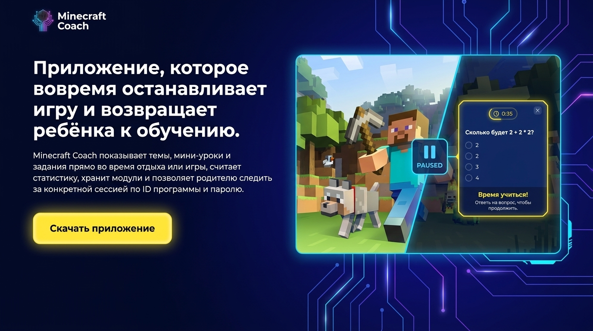
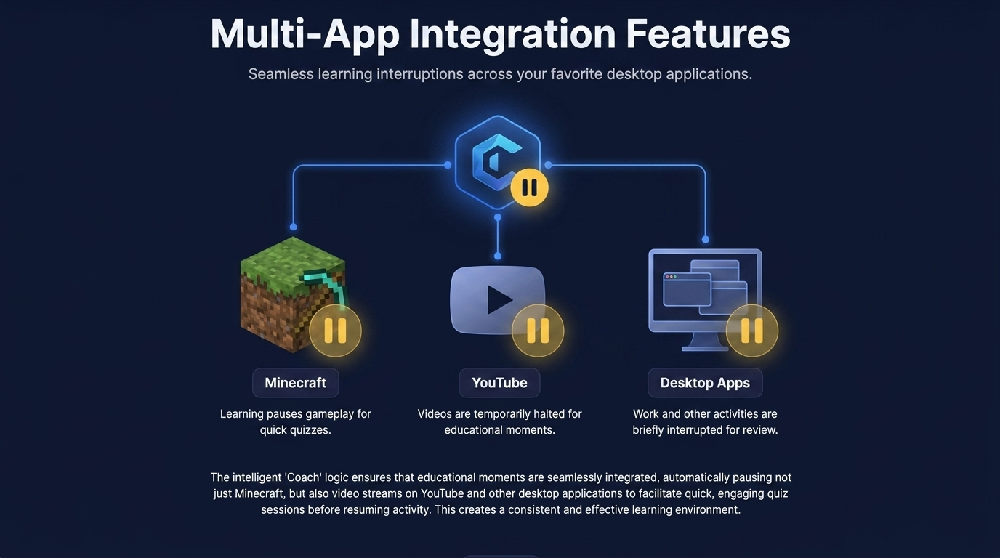
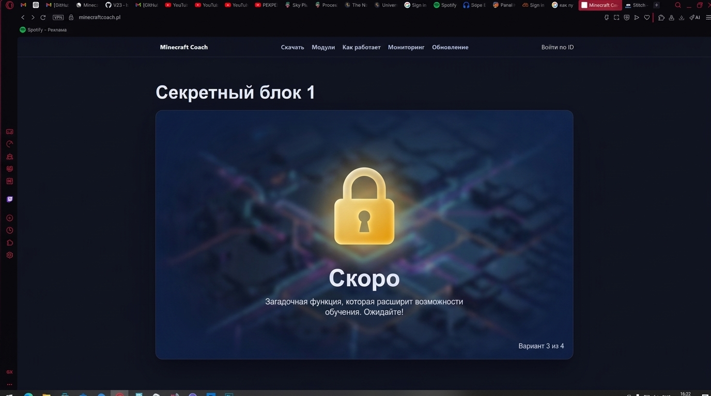

Обучение внутри игры
Пауза
Урок в нужный момент
Модули
Темы загружаются отдельно
Мониторинг
Родитель видит сессию онлайн
Приложение, которое вовремя останавливает игру и возвращает ребёнка к обучению.
Minecraft Coach показывает темы, мини-уроки и задания прямо во время отдыха или игры, считает статистику, хранит модули и позволяет родителю следить за конкретной сессией по ID программы и паролю.

Авто-пауза
встраивается в игровой ритм
Мини-урок + ответ
Короткий вопрос, таймер и возвращение в игру только после действия.
Продуктовая логика
Один стек для Minecraft, видео, desktop-приложений и родительского контроля.
Ребёнок не выпадает из привычного сценария, а мягко переключается на учебный этап.
Небольшие уроки и задания дают результат без перегруза и без долгих остановок.
Сайт показывает актуальное состояние конкретной сессии, статистику и настройки.
Скачать
Всегда актуальная desktop-версия без ручного поиска файлов.
Сайт сам показывает текущую сборку приложения и даёт прямую ссылку на свежий `.exe`.
Desktop build
Minecraft Coach Desktop
Проверяем наличие файла...
Скачать .exe
Если кнопка неактивна, значит актуальная сборка ещё не загружена в папку `dist/`.
Интеграции
Сайт теперь визуально поддерживает идею мульти-приложения и умных учебных пауз.
Блок вдохновлён вашим референсом и объясняет, как одна логика управляет игрой, видео и desktop-активностью.

Minecraft
Программа ставит игру на паузу, выводит вопрос или мини-урок и возвращает ребёнка обратно в игровой поток.
YouTube и видео
Та же логика подходит для обучающих и развлекательных видео, когда нужен короткий учебный interrupt.
Desktop apps
Сценарий масштабируется на другие приложения, сохраняя единый формат паузы, задания и продолжения.
Minecraft Coach выглядит не как обычный лендинг про “скачать exe”, а как технологическая система, которая связывает игру, обучение и удалённый контроль в одном опыте.
Модули
Выберите и скачайте нужный учебный модуль.
Модули подгружаются с сервера автоматически. После скачивания достаточно положить их в папку
modules вашей программы.
Как работает
Путь от установки до обучающей сессии.
Скачайте приложение
На сайте всегда лежит свежая сборка, так что пользователю не нужно искать правильную версию вручную.
Добавьте нужные модули
Темы и наборы контента загружаются отдельно, поэтому программу можно расширять без новой сборки сайта.
Настройте интервалы и пароль
Родитель выбирает темп учебных пауз, объём заданий и защищает доступ к мониторингу паролем.
Следите за сессией онлайн
По ID программы и паролю сайт показывает текущее состояние, статистику и последнее обновление.
Мониторинг
Подключение к конкретной сессии по ID программы.
Введите ID программы и пароль родителя. После входа сайт начнёт автоматически обновлять состояние сессии.
Онлайн-доступ
Родитель подключается по ID программы и паролю, без лишних экранов и сложного онбординга.
После входа открывается живая сводка: текущий режим, активная тема, монеты, ошибки, число пауз и параметры сессии.
ID программы
точечный доступ
Пароль родителя
защищённый вход
Автообновление
каждые 15 секунд
Dashboard
статистика + статус
Обновление
Чтобы выложить новую версию, не нужно заново проектировать сайт.
Обновление приложения
Достаточно заменить dist/MinecraftCoach.exe. Каталог загрузок начнёт отдавать новую сборку автоматически.
Обновление модулей
Добавьте или обновите папки в modules/, и сайт сам покажет их в каталоге для скачивания.
Новые секции сайта
Страница теперь собрана как набор выразительных блоков, которые легко расширять под roadmap, кейсы и новые функции.
Секретный блок
Визуально заложили место под будущие закрытые функции и новые режимы обучения.
Этот блок продолжает атмосферу продукта и работает как тизер следующего этапа развития.
